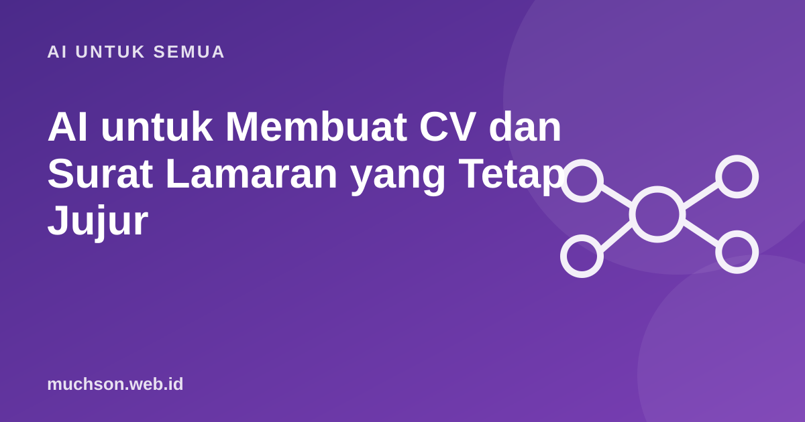

Beranda › Artikel › AI untuk Semua
AI untuk SemuaAI untuk Membuat CV dan Surat Lamaran yang Tetap Jujur
Recruiter kini sering menerima surat lamaran yang terdengar mirip satu sama lain: "I am writing to express my keen interest..." Tanda khas teks AI yang tidak disunting. AI bisa sangat membantu menyusun CV dan surat lamaran, tetapi hanya bila dipakai untuk menggali dan merapikan cerita Anda sendiri, bukan mengarang yang baru.

Peran AI yang tepat
Langkah 1: gali pencapaian dengan wawancara
Bagian tersulit CV adalah menuliskan dampak, bukan tugas. Biarkan AI mewawancarai Anda:
Kamu adalah konsultan karier. Wawancarai saya untuk menggali pencapaian di pekerjaan terakhir saya sebagai [posisi].
Tanyakan satu pertanyaan setiap kali, fokus pada: masalah yang saya selesaikan, angka atau hasil, alat yang saya pakai, dan dampaknya bagi tim atau pelanggan.
Setelah 6 pertanyaan, rangkum menjadi 4 poin CV dengan format: kata kerja + apa yang dilakukan + hasil.
Jangan menambahkan angka yang tidak saya sebutkan.Kalimat "jangan menambahkan angka yang tidak saya sebutkan" sangat penting. AI cenderung mempercantik dengan angka karangan, dan angka palsu di CV bisa merusak kepercayaan saat wawancara.
Langkah 2: sesuaikan dengan lowongan
Langkah 3: surat lamaran yang tidak generik
Surat lamaran yang menarik menjawab tiga hal: kenapa perusahaan ini, kenapa Anda cocok (dengan bukti), dan apa yang akan Anda bawa. Beri AI bahan yang spesifik:
- Satu hal spesifik tentang perusahaan yang membuat Anda tertarik (produk, nilai, proyek terbaru).
- Satu cerita pencapaian yang paling relevan dengan posisi.
- Gaya bahasa yang diinginkan: formal, semi-formal, bahasa Indonesia atau Inggris.
- Batas panjang, misalnya 250 kata.
| Frasa generik (hindari) | Ganti dengan sesuatu yang spesifik |
|---|---|
| "Saya adalah pekerja keras dan cepat belajar." | "Dalam 3 bulan saya mempelajari Google Analytics dan menyusun laporan mingguan untuk tim." |
| "Saya sangat tertarik dengan perusahaan Anda." | "Fitur cicilan tanpa kartu kredit yang baru diluncurkan menarik bagi saya karena..." |
| "Saya yakin bisa memberi kontribusi." | "Pengalaman saya mengelola 5 akun media sosial UMKM relevan untuk..." |
Langkah 4: periksa sebelum mengirim
Recruiter sering menanyakan detail dari CV saat wawancara. Apa pun yang ditulis dengan bantuan AI harus bisa Anda ceritakan dengan lancar dan jujur. Di situlah perbedaan antara CV yang dibantu AI dan CV yang ditulis oleh AI.
Tanya jawab
Bolehkah membuat CV dengan ChatGPT?
Apakah recruiter bisa tahu surat lamaran buatan AI?
Bagaimana agar CV dari AI tidak generik?
Apakah aman memasukkan data pribadi ke AI?
Sumber dan bacaan lanjut
- CV ramah ATS (artikel terkait)
- Privasi data saat memakai chatbot AI (artikel terkait)
- Halusinasi AI: kenapa AI mengarang (artikel terkait)